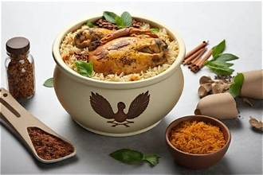

Bringing the Authentic Taste of Arabia to Your Table. At YAMANI MANDHI, our story is inspired by a deep love for Arabian cuisine, rich culinary heritage and the belief that great food brings people together. Rooted in the traditional flavours of Yemen, Mandhi is more than just a dish to us — it is a celebration of culture, tradition and togetherness. We believe that every memorable dining experience begins with the perfect blend of flavour, freshness and passion. From the aroma of perfectly seasoned rice to the tenderness of slow-cooked, flavourful meat, every element is thoughtfully prepared to deliver a taste worth remembering. Our inspiration comes from the traditional Arabian way of preparing and sharing meals, where food is not simply served but celebrated with family and friends. We aim to recreate that warmth and hospitality through every dish we prepare. At Yamani Mandhi, we take pride in bringing together authentic recipes, carefully selected ingredients and traditional cooking inspirations to create meals that delight every food lover. Whether you're enjoying a meal with family, celebrating a special occasion or simply satisfying your cravings, we want every visit to feel special. Our vision is to create more than just a restaurant — a destination where authentic Arabian flavours meet warm hospitality, where every plate tells a story and every guest leaves with a memorable experience. YAMANI MANDHI — A Taste of Tradition, A Memory in Every Bite.
Our journey is driven by passion, dedication and a commitment to serving something truly special. From discovering authentic recipes to perfecting our cooking techniques, every step reflects our love for Arabian cuisine. We continue to grow with one simple vision — to make every guest experience the warmth of Arabian hospitality and the richness of traditional Mandhi.
